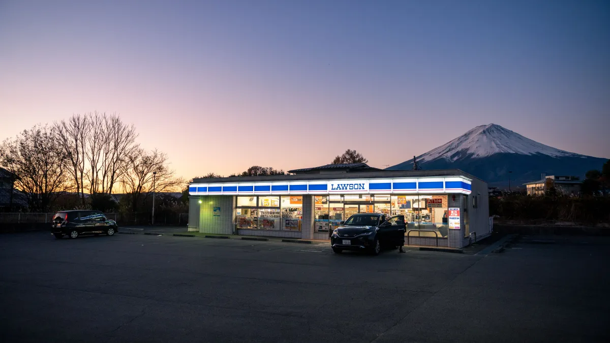
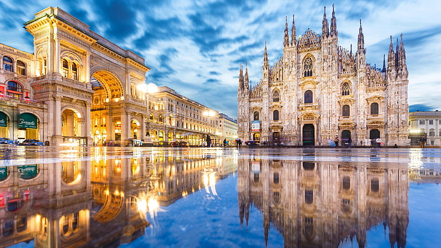
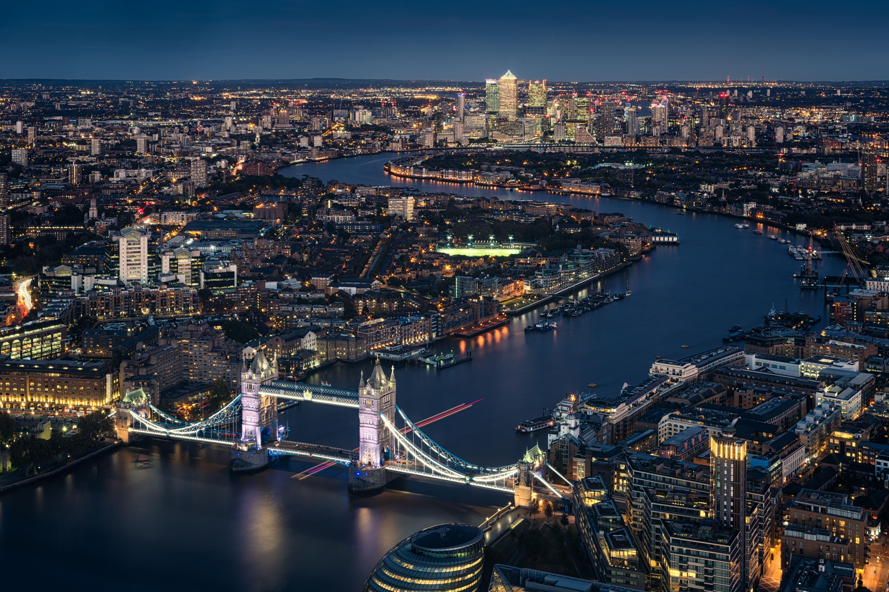

Japão
Fujikawaguchiko
Localizada na região dos Cinco Lagos, a cidade oferece um refúgio sereno com a vista mais icónica do Japão.
- Atmosfera: Tranquila e contemplativa
- Destaque: Vista direta do Monte Fuji
- Experiência: Banhos termais e natureza

italia
Milão
O centro gravitacional da moda mundial e do design contemporâneo, onde a história encontra a inovação.
- Atmosfera: Sofisticada e cosmopolita
- Destaque: Arquitetura do Duomo di Milano
- Experiência: Alta gastronomia e design

Inglaterra
Londres
Uma metrópole que preserva milénios de tradição real enquanto lidera movimentos culturais globais.
- Atmosfera: Vibrante e multicultural
- Destaque: Museus e marcos históricos
- Experiência: Vida urbana e parques reais